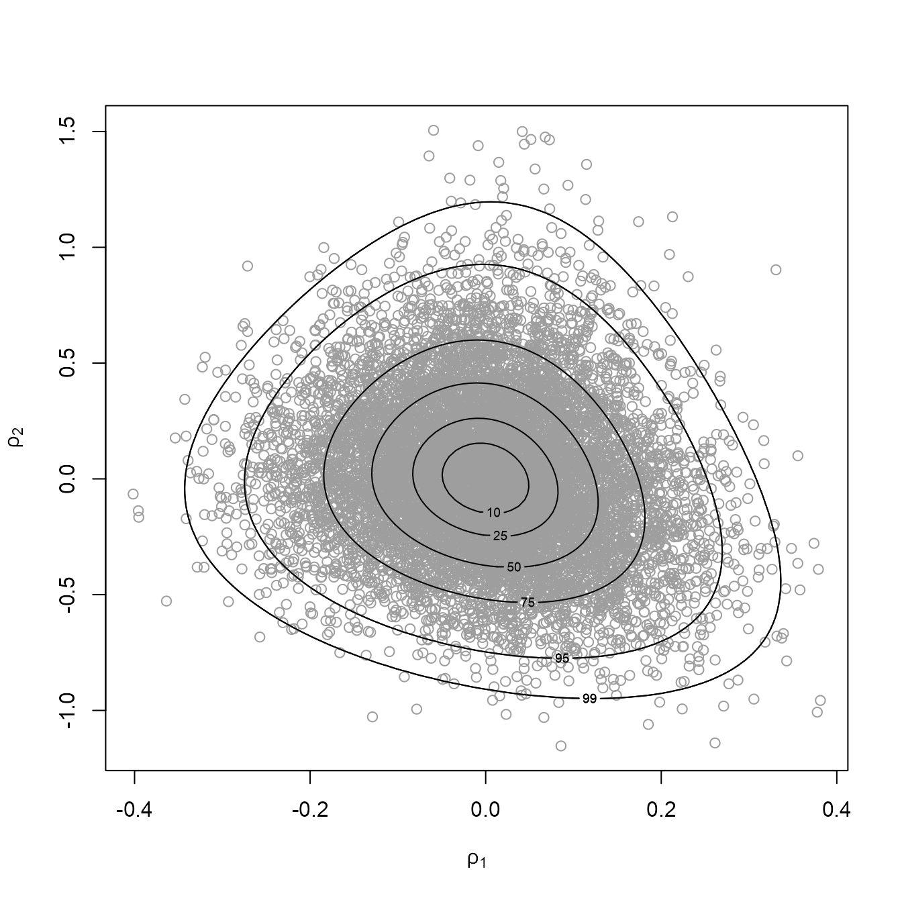

vignettes/bang-a-vignette.Rmd
bang-a-vignette.RmdThe bang package uses the rust package (Northrop 2017b) to produce random samples, using the generalized ratio-of-uniforms method, from the posterior distributions involved in certain Bayesian models. rust was originally created to perform this role in the package revdbayes (Northrop 2017a), which deals with basic extreme value models with only 2 or 3 parameters. The aim of bang is to tackle further models.
See also the vignettes Hierarchical 1-way Analysis of Variance and Conjugate Hierarchical Models.
The ratio-of-uniforms method is an acceptance-rejection type algorithm whose efficiency decreases quickly as the dimension of the target distribution increases. Therefore, it may not be a feasible method of sampling directly from a distribution with the order of 10 parameters. However, for some models it is possible to factorize the joint posterior density into a product of a marginal posterior density for a low-dimensional set of parameters and conditional posteriors densities of the other parameters given the parameters in this set. In such cases we can sample values from the marginal posterior and then sample from the conditional posteriors given these values. The examples considered in the first release of bang are hierarchical models in which the marginal density is not of a simple form (so we use rust to sample from it) but the conditional densities are of a simple form and we can simulate from them using standard simulation algorithms.
In comparison to sampling from a posterior distribution using a Markov Chain Monte Carlo (MCMC) method, such as Gibbs sampling, direct simulation to produce a random sample has some advantages: no need to monitor convergence, no serial dependence in the sample. However, the generalized ratio-of-uniforms method can only be applied to densities for which its acceptance region can be enclosed within a bounding region of finite volume from which it is simple to simulate, usually a cuboid. Conditions on the density for this to be achievable depend on the value of a non-negative tuning parameter \(r\) and are given in Wakefield, Gelfand, and Smith (1991). If a density has heavy tails then it may not be possible to form the bounding cuboid if \(r\) is too small. In rust \(r = 1/2\) is used as a default because it is optimal for a Gaussian density, but a larger value, such as \(r = 1\) or greater may be needed if the density has heavy tails. Alternatively, a transformation of variable can be used to ensure the validity of the method and/or improve the efficiency of the algorithm. See the Introducing rust: Ratio-of-Uniforms Simulation with Transformation vignette of the rust package for details. These strategies (increasing \(r\) or transformation of variable) are illustrated in the vignette Hierarchical 1-way Analysis of Variance
Only in some simple special cases is it possible to find algebraically the dimensions of the smallest possible bounding cuboid. In practice, these dimensions are found using optimization methods. The first stage is to find the mode of the target density, after which the density is relocated so that its mode is at the origin. This simple strategy will tend to increase the efficiency of the method (Wakefield, Gelfand, and Smith 1991). This also makes the search for the remaining dimensions of the bounding cuboid more reliable as does the target density being unimodal. Unimodality of the density is not a necessary condition for the ratio-of-uniforms algorithm to be applicable but a lack of local modes does mean that the numerical optimizations should find the correct bounding cuboid.
Direct simulation methods like the ratio-of-uniforms methods will not replace MCMC as a general method for simulating from posterior densities. However, they may provide a useful alternative for some commonly-used models.
As a brief example we use the analysis of the `rat tumor’ data presented in Section 5.3 of Gelman et al. (2014) based on a hierarchical binomial-beta model. This example is considered in more detail in the vignette Conjugate Hierarchical Models. The following code reproduces (up to a shift in origin) the content of Figure 5.3 of Gelman et al. (2014).
library(bang)
# To produce a plot akin to Figure 5.3 of Gelman et al. (2014) we
# (a) Use the same prior for (alpha, beta)
# (b) Don't use axis rotation (rotate = FALSE)
# (c) Plot on the scale used for ratio-of-uniforms sampling (ru_scale = TRUE)
# (d) Note that the mode is relocated to (0, 0) in the plot
rat_res <- hef(model = "beta_binom", data = rat, rotate = FALSE, n = 10000)
# Plot of simulated values and posterior density contours
plot(rat_res, ru_scale = TRUE)
# The estimated posterior mode, which agrees with Figure 5.3 of Gelman et al. (2014)
rat_res$f_mode
#> [1] -1.785783 2.741549Gelman, A., J. B. Carlin, H. S. Stern, D. B. Dunson, A. Vehtari, and D. B. Rubin. 2014. Bayesian Data Analysis. Third. Florida, USA: Chapman & Hall / CRC. http://www.stat.columbia.edu/~gelman/book/.
Northrop, P. J. 2017a. Revdbayes: Ratio-of-Uniforms Sampling for Bayesian Extreme Value Analysis. https://CRAN.R-project.org/package=revdbayes.
———. 2017b. rust: Ratio-of-Uniforms Simulation with Transformation. https://CRAN.R-project.org/package=rust.
Wakefield, J. C., A. E. Gelfand, and A. F. M. Smith. 1991. “Efficient Generation of Random Variates via the Ratio-of-Uniforms Method.” Statistics and Computing 1 (2): 129–33. doi:10.1007/BF01889987.